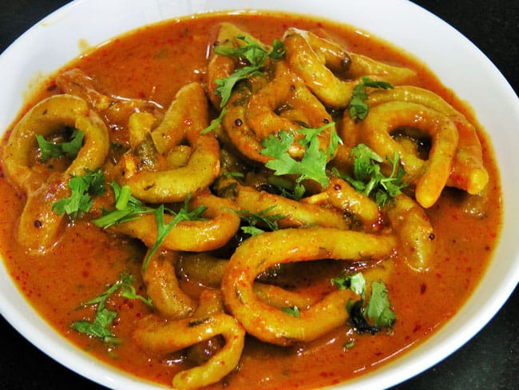

Shengole - Indian Pasta

Ingredients
- Wheat flour
- Carom seeds
- Garlic green chili paste (7~8 garlic cloves and 1-2 green chilies)
- Salt to taste
- Paprika
- Turmeric Powder
- Cumin Seeds
- Mustard Seeds
- Coriander
Instructions
- Take 1 cup wheat flour in a bowl
- Add the following and give this a dry mix
- 1 tsp tumeric powder
- garlic chili paste
- a pinch of salt
- Add water to the flour mix and knead thoroughly. The consistency should be tighter than a pizza dough(could not find a more relevant global reference)
- Cover the dough with a damp cloth and let rest for 20 mins
- To make the gravy, add 2tbsp oil in a pan. When oil is hot put mustard seeds and once popped add cumin seeds
- Reduce the heat to low
- Add some tumeric powder, paprika, garam masala and stir
- To stop the spices from burning you can add tomato puree
- Increase the heat to mid-high and once the gravy comes to a light boil add hot water
- Take the dough and make roll it like a thick string
- Cut the dough into equal parts and make rings or any shape you would like make sure they are similar to ensure proper cooking
- Drop the shengole into boiling gravy and cook 10-15 mins or until all shengoles are cooked
- Serve hot and add coarse chopped Coriander
Go to 🔝
Go back to main menu